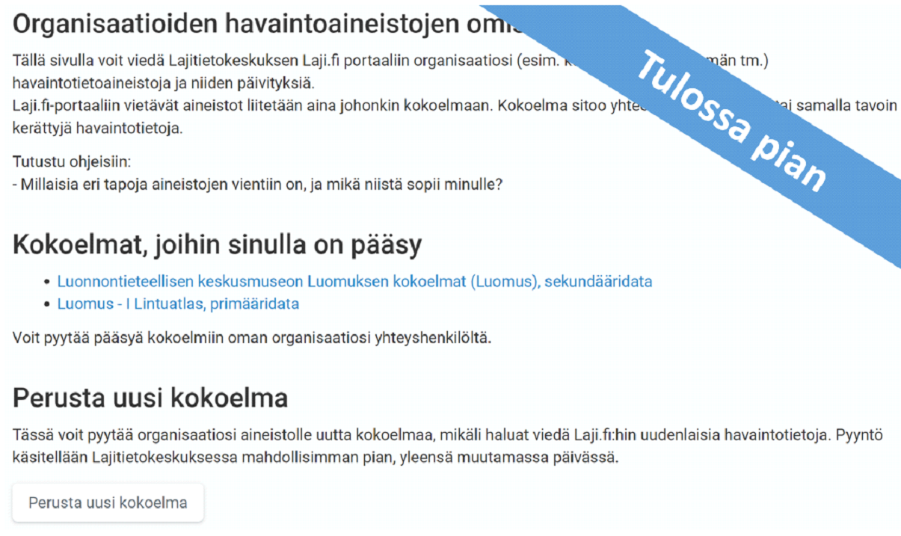

Tallenna havaintotietoa
Havaintotiedon tallentaminen Lajitietokeskuksen tietovarastoon omasta tietojärjestelmästä
- Aineistoja voi tallentaa kopiona Lajitietokeskukseen (sekundaaridata) organisaation primaaritietoa ylläpitävästä tietojärjestelmästä
- Aineistoja voi tuoda kertaluonteisesti hallittavaksi Lajitietokeskukseen (primaaridata), jolloin Lajitietokeskukseen tuotua tietoa hallinnoidaan ja päivitetään (muutetaan, korjataan, rikastetaan jne.) Oma-Vihko palvelun kautta.
Organisaatioiden havaintoaineistot

Havaintotiedon tallennus omaan tietojärjestelmään
Tiedoston vienti Exceliin
Tiedoston vienti ArcGISiin